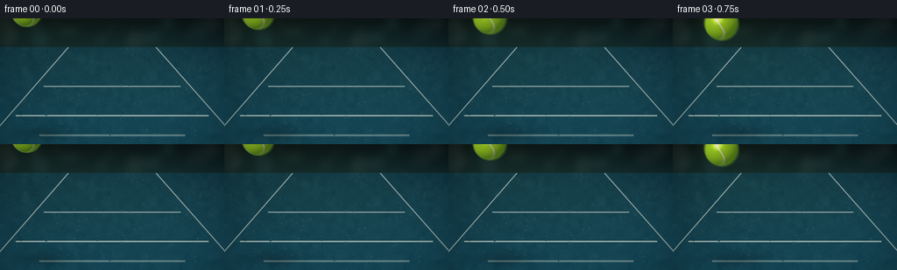
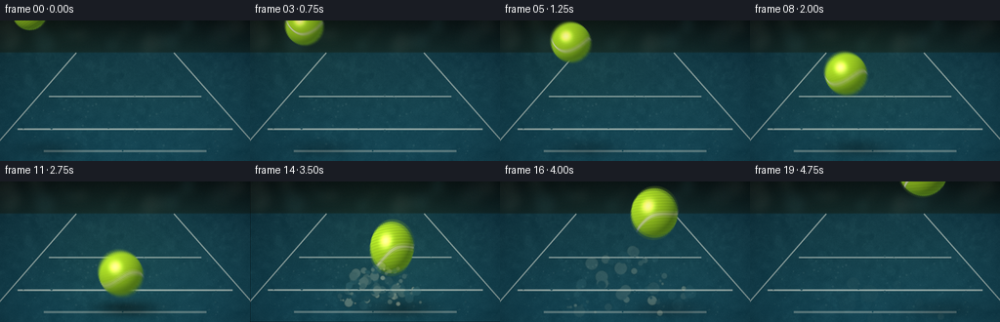
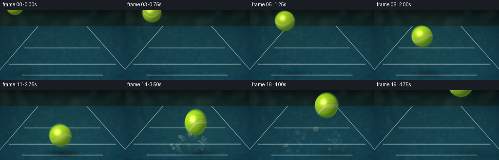
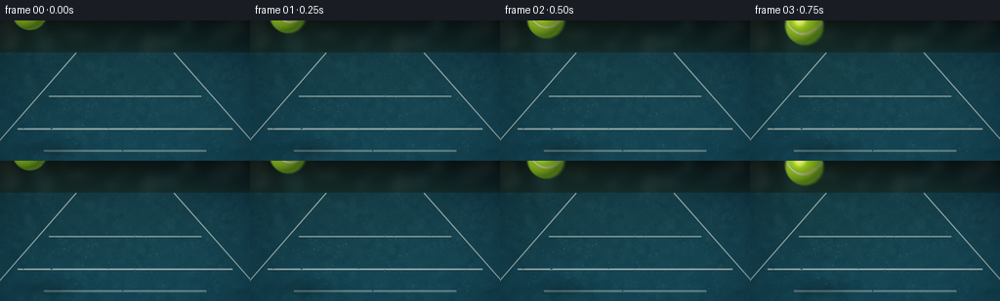
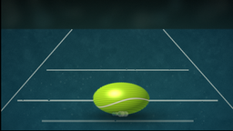
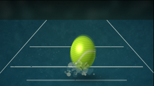
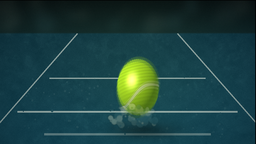

CODING AGENTS AS PIXEL WORLD MODELS
traex/DeepSeek-V4.1-Flash · phygen_028
点击播放 · 原生 RGB 像素
逐轮保存的候选
回放视频、检查图与代码变化。
每份候选均可单独播放。实际图片检查记录在下方工具轨迹中。
候选 01播放与检查图
点击播放 · 原生 RGB 像素

展开代码变化
--- 上一保存版本
+++ 本次保存版本
@@ -0,0 +1,507 @@
+from __future__ import annotations
+
+import math
+from pathlib import Path
+
+import numpy as np
+from PIL import Image, ImageDraw, ImageFilter
+
+import artifact_io
+
+
+W, H = 256, 144
+SS = 4
+IW, IH = W * SS, H * SS
+N_FRAMES = 20
+FPS = 4.0
+
+# The contact point is deliberately just above the lower edge, leaving room
+# for the shadow and impact plume while keeping the ball large on screen.
+FLOOR_Y = 127.0
+CONTACT_X = 132.0
+CONTACT_CY = 109.0
+CONTACT_FRAME = 12
+
+
+def smoothstep(edge0, edge1, x):
+ t = np.clip((x - edge0) / (edge1 - edge0), 0.0, 1.0)
+ return t * t * (3.0 - 2.0 * t)
+
+
+def resize_field(field, width, height):
+ arr = np.asarray(field, dtype=np.float32)
+ if arr.min() < 0.0 or arr.max() > 1.0:
+ arr = (arr - arr.min()) / max(1e-6, arr.max() - arr.min())
+ image = Image.fromarray(np.uint8(np.clip(arr, 0.0, 1.0) * 255.0))
+ image = image.resize((width, height), Image.Resampling.BICUBIC)
+ return np.asarray(image, dtype=np.float32) / 255.0
+
+
+def rotation_yz(vector, angle_y, angle_z):
+ x, y, z = vector
+ cy, sy = math.cos(angle_y), math.sin(angle_y)
+ x1 = cy * x + sy * z
+ z1 = -sy * x + cy * z
+ cz, sz = math.cos(angle_z), math.sin(angle_z)
+ x2 = cz * x1 - sz * y
+ y2 = sz * x1 + cz * y
+ return x2, y2, z1
+
+
+def state_at(frame_position):
+ """Continuous ball state, with a slow-motion descent and elastic rebound."""
+ t = float(np.clip(frame_position, 0.0, N_FRAMES - 1))
+ if t <= CONTACT_FRAME:
+ q = t / CONTACT_FRAME
+ x = 30.0 + (CONTACT_X - 30.0) * q
+ y = -8.0 + (CONTACT_CY + 8.0) * (q ** 1.55)
+ radius = 18.0 + 5.5 * (q ** 0.80)
+ rx = ry = radius
+ angle = -0.04
+ else:
+ k = t - CONTACT_FRAME
+ x = CONTACT_X + 6.5 * k
+ y = CONTACT_CY - 22.0 * k + 0.70 * k * k
+ radius = 24.0 + 0.24 * k
+ stretch = math.exp(-0.55 * max(0.0, k - 1.0))
+ rx = radius * (1.0 - 0.12 * stretch)
+ ry = radius * (1.0 + 0.18 * stretch)
+ angle = -0.10 - 0.11 * stretch
+ return {
+ "x": x,
+ "y": y,
+ "rx": rx,
+ "ry": ry,
+ "angle": angle,
+ "spin": 0.30 + 0.115 * t,
+ }
+
+
+def impact_state():
+ return {
+ "x": CONTACT_X,
+ "y": CONTACT_CY,
+ "rx": 31.5,
+ "ry": 18.0,
+ "angle": 0.0,
+ "spin": 0.30 + 0.115 * CONTACT_FRAME,
+ }
+
+
+def make_background():
+ rng = np.random.default_rng(20261110)
+ yy, xx = np.mgrid[0:IH, 0:IW]
+ xn = xx / float(IW - 1)
+ yn = yy / float(IH - 1)
+ horizon = 0.225
+
+ # Deep, slightly cool arena wall.
+ upper_t = np.clip(yn / horizon, 0.0, 1.0)
+ wall_top = np.array([0.025, 0.060, 0.073], dtype=np.float32)
+ wall_bottom = np.array([0.045, 0.125, 0.145], dtype=np.float32)
+ image = wall_top[None, None, :] * (1.0 - upper_t[..., None])
+ image += wall_bottom[None, None, :] * upper_t[..., None]
+
+ # Hard-court blue, brighter under the key light and darker toward the edges.
+ ground_t = np.clip((yn - horizon) / (1.0 - horizon), 0.0, 1.0)
+ court_near = np.array([0.075, 0.275, 0.345], dtype=np.float32)
+ court_far = np.array([0.045, 0.190, 0.255], dtype=np.float32)
+ ground = court_far[None, None, :] * (1.0 - ground_t[..., None] ** 1.4)
+ ground += court_near[None, None, :] * (ground_t[..., None] ** 1.4)
+ ground_mask = smoothstep(horizon - 0.004, horizon + 0.009, yn)[..., None]
+ image = image * (1.0 - ground_mask) + ground * ground_mask
+
+ # Broad key-light falloff and a faint warm bounce from the court.
+ key = np.exp(-(((xn - 0.37) / 0.62) ** 2 + ((yn - 0.38) / 0.55) ** 2))
+ image += np.array([0.035, 0.045, 0.020], dtype=np.float32)[None, None, :] * key[..., None]
+ edge_light = np.exp(-(((xn - 0.85) / 0.34) ** 2 + ((yn - 0.53) / 0.45) ** 2))
+ image += np.array([0.018, 0.030, 0.024], dtype=np.float32)[None, None, :] * edge_light[..., None]
+
+ # Multi-scale, low-contrast surface grain.
+ coarse = resize_field(rng.normal(0.5, 0.18, (24, 40)), IW, IH)
+ medium = resize_field(rng.normal(0.5, 0.20, (64, 112)), IW, IH)
+ fine = rng.normal(0.0, 0.018, (IH, IW)).astype(np.float32)
+ grain = (coarse - 0.5) * 0.060 + (medium - 0.5) * 0.035 + fine
+ image += grain[..., None] * ground_mask * np.array([0.58, 0.72, 0.70], dtype=np.float32)
+
+ # Subtle elongated scuffs in the court surface.
+ scuff = np.sin(xx * 0.019 + yy * 0.004 + coarse * 9.0)
+ scuff *= np.sin(xx * 0.006 - yy * 0.023 + medium * 7.0)
+ scuff = np.clip(scuff, 0.0, 1.0) ** 5
+ image += scuff[..., None] * ground_mask * np.array([0.014, 0.020, 0.017], dtype=np.float32)
+
+ base = Image.fromarray(np.uint8(np.clip(image, 0.0, 1.0) * 255.0), "RGB")
+
+ # Soft out-of-focus arena lights, confined to the upper wall.
+ bokeh = Image.new("RGBA", (IW, IH), (0, 0, 0, 0))
+ bd = ImageDraw.Draw(bokeh)
+ light_rng = np.random.default_rng(4815)
+ for _ in range(22):
+ x = float(light_rng.uniform(0.02, 0.98) * IW)
+ y = float(light_rng.uniform(0.025, 0.205) * IH)
+ radius = float(light_rng.uniform(4.0, 14.0) * SS)
+ warm = light_rng.uniform() > 0.36
+ color = (225, 238, 212, int(light_rng.uniform(8, 24))) if warm else (130, 210, 224, int(light_rng.uniform(7, 19)))
+ bd.ellipse((x - radius, y - radius, x + radius, y + radius), fill=color)
+ bokeh = bokeh.filter(ImageFilter.GaussianBlur(5.0 * SS))
+ base = Image.alpha_composite(base.convert("RGBA"), bokeh).convert("RGB")
+
+ # Court markings are drawn in perspective and then lightly worn.
+ lines = Image.new("RGBA", (IW, IH), (0, 0, 0, 0))
+ ld = ImageDraw.Draw(lines)
+
+ def court_line(points, width_lowres, alpha):
+ pts = [(int(round(x * IW)), int(round(y * IH))) for x, y in points]
+ ld.line(pts, fill=(222, 228, 216, alpha), width=max(2, int(round(width_lowres * SS))), joint="curve")
+
+ vp = (0.500, horizon + 0.004)
+ court_line([(0.305, horizon + 0.004), (-0.090, 1.035)], 1.35, 150)
+ court_line([(0.695, horizon + 0.004), (1.095, 1.035)], 1.35, 150)
+ court_line([(0.195, 0.540), (0.805, 0.540)], 1.35, 155)
+ court_line([(0.070, 0.772), (0.930, 0.772)], 1.85, 160)
+ court_line([(0.175, 0.928), (0.825, 0.928)], 2.15, 95)
+
+ # Fine wear flecks break up the otherwise clean paint.
+ for _ in range(115):
+ x = float(light_rng.uniform(0.08, 0.92) * IW)
+ y = float(light_rng.uniform(0.50, 0.96) * IH)
+ size = float(light_rng.uniform(0.5, 2.2) * SS)
+ ld.ellipse((x, y, x + size, y + size), fill=(210, 224, 210, int(light_rng.uniform(8, 24))))
+ base = Image.alpha_composite(base.convert("RGBA"), lines).convert("RGB")
+
+ return np.asarray(base, dtype=np.float32) / 255.0
+
+
+BACKGROUND = make_background()
+
+
+def add_soft_ellipse(image, cx, cy, sx, sy, color, strength):
+ cx, cy, sx, sy = (float(v) for v in (cx, cy, sx, sy))
+ x0 = max(0, int(math.floor(cx - 3.2 * sx)))
+ x1 = min(IW, int(math.ceil(cx + 3.2 * sx)))
+ y0 = max(0, int(math.floor(cy - 3.2 * sy)))
+ y1 = min(IH, int(math.ceil(cy + 3.2 * sy)))
+ if x0 >= x1 or y0 >= y1:
+ return
+ yy, xx = np.mgrid[y0:y1, x0:x1]
+ falloff = np.exp(-0.5 * (((xx - cx) / sx) ** 2 + ((yy - cy) / sy) ** 2))
+ a = np.clip(falloff * strength, 0.0, 1.0)[..., None]
+ patch = image[y0:y1, x0:x1]
+ target = np.asarray(color, dtype=np.float32)[None, None, :]
+ image[y0:y1, x0:x1] = patch * (1.0 - a) + target * a
+
+
+def render_ball(state, frame_index, softness=0.0):
+ cx = state["x"] * SS
+ cy = state["y"] * SS
+ rx = state["rx"] * SS
+ ry = state["ry"] * SS
+ angle = state["angle"]
+ reach = max(rx, ry) * 1.17 + 4.0 * SS
+ x0 = max(0, int(math.floor(cx - reach)))
+ x1 = min(IW, int(math.ceil(cx + reach)))
+ y0 = max(0, int(math.floor(cy - reach)))
+ y1 = min(IH, int(math.ceil(cy + reach)))
+ if x0 >= x1 or y0 >= y1:
+ return None
+
+ yy, xx = np.mgrid[y0:y1, x0:x1]
+ dx = (xx - cx) / max(1.0, rx)
+ dy = (yy - cy) / max(1.0, ry)
+ ca, sa = math.cos(-angle), math.sin(-angle)
+ nx = ca * dx - sa * dy
+ ny = sa * dx + ca * dy
+ r2 = nx * nx + ny * ny
+
+ # Anti-aliased, lightly fibrous silhouette.
+ local_scale = max(rx, ry) / max(1e-4, max(state["rx"], state["ry"]))
+ edge_texture = (
+ np.sin(xx * 0.83 + yy * 0.37 + frame_index * 0.9)
+ + 0.55 * np.sin(xx * 1.91 - yy * 1.23 + 0.7)
+ + 0.30 * np.sin(xx * 3.17 + yy * 2.09)
+ )
+ edge_texture /= 1.85
+ edge_limit = 0.986 + edge_texture * 0.018
+ alpha = 1.0 - smoothstep(edge_limit - 0.025, edge_limit + 0.018, np.sqrt(r2))
+ alpha *= (r2 < 1.20)
+ if softness > 0.0:
+ alpha = np.asarray(
+ Image.fromarray(np.uint8(np.clip(alpha, 0, 1) * 255.0)).filter(
+ ImageFilter.GaussianBlur(max(0.6, softness * SS))
+ ),
+ dtype=np.float32,
+ ) / 255.0
+ if not np.any(alpha > 0.002):
+ return None
+
+ z = np.sqrt(np.clip(1.0 - r2, 0.0, 1.0))
+ surface_x, surface_y, surface_z = rotation_yz(
+ (nx, ny, z), state["spin"], -0.10 - 0.025 * frame_index
+ )
+
+ # Three-dimensional felt shading.
+ light = np.array([-0.43, -0.57, 0.70], dtype=np.float32)
+ light /= np.linalg.norm(light)
+ diffuse = np.clip(nx * light[0] + ny * light[1] + z * light[2], 0.0, 1.0)
+ half = light + np.array([0.0, 0.0, 1.0], dtype=np.float32)
+ half /= np.linalg.norm(half)
+ spec = np.clip(nx * half[0] + ny * half[1] + z * half[2], 0.0, 1.0) ** 34
+ rim = (1.0 - z) ** 2.2
+
+ base_color = np.array([0.72, 0.91, 0.15], dtype=np.float32)
+ light_color = np.array([1.00, 0.985, 0.76], dtype=np.float32)
+ shadow_color = np.array([0.19, 0.32, 0.055], dtype=np.float32)
+ shade = 0.20 + 0.80 * (diffuse ** 0.82)
+ color = shadow_color[None, None, :] * (1.0 - shade[..., None])
+ color += base_color[None, None, :] * shade[..., None]
+ color *= (0.965 + 0.055 * np.sin(surface_y * 44.0 + surface_x * 31.0))[..., None]
+
+ # The two pale seam curves follow the ball's surface rather than screen space.
+ lat = np.arcsin(np.clip(surface_y, -1.0, 1.0))
+ lon = np.arctan2(surface_x, surface_z)
+ wave_a = 0.42 * np.sin(2.18 * lat + 0.20)
+ wave_b = -0.42 * np.sin(2.18 * lat + 0.92)
+ d_a = np.abs(np.arctan2(np.sin(lon - wave_a - 0.48), np.cos(lon - wave_a - 0.48)))
+ d_b = np.abs(np.arctan2(np.sin(lon - wave_b + 0.48), np.cos(lon - wave_b + 0.48)))
+ seam = 1.0 - smoothstep(0.040, 0.072, np.minimum(d_a, d_b))
+ seam_shadow = 1.0 - smoothstep(0.062, 0.100, np.minimum(d_a, d_b))
+ seam_color = np.array([0.92, 0.94, 0.77], dtype=np.float32)
+ seam_shaded = seam_color[None, None, :] * (0.58 + 0.42 * diffuse[..., None])
+ color = color * (1.0 - seam_shadow[..., None] * 0.10)
+ color = color * (1.0 - seam[..., None]) + seam_shaded * seam[..., None]
+
+ color += light_color[None, None, :] * (spec * 0.68)[..., None]
+ color += np.array([0.45, 0.82, 0.62], dtype=np.float32)[None, None, :] * (rim * 0.16)[..., None]
+ color = np.clip(color, 0.0, 1.0)
+
+ rgba = np.zeros((y1 - y0, x1 - x0, 4), dtype=np.float32)
+ rgba[..., :3] = color
+ rgba[..., 3] = alpha
+ return (x0, y0, x1, y1), rgba
+
+
+def compose_ball(image, states, weights, frame_index):
+ rgb_acc = np.zeros((IH, IW, 3), dtype=np.float32)
+ alpha_acc = np.zeros((IH, IW), dtype=np.float32)
+ for state, weight in zip(states, weights):
+ rendered = render_ball(state, frame_index, softness=0.18)
+ if rendered is None:
+ continue
+ (x0, y0, x1, y1), rgba = rendered
+ rgb_acc[y0:y1, x0:x1] += rgba[..., :3] * rgba[..., 3:4] * weight
+ alpha_acc[y0:y1, x0:x1] += rgba[..., 3] * weight
+ alpha_acc = np.clip(alpha_acc, 0.0, 1.0)
+ image *= (1.0 - alpha_acc[..., None])
+ image += rgb_acc
+ return image
+
+
+def add_speed_streak(image, frame_index):
+ if frame_index <= 0 or frame_index > CONTACT_FRAME + 1:
+ return image
+ current = impact_state() if frame_index == CONTACT_FRAME else state_at(frame_index)
+ previous = state_at(frame_index - 0.55)
+ dx = current["x"] - previous["x"]
+ dy = current["y"] - previous["y"]
+ length = math.hypot(dx, dy)
+ if length < 2.0:
+ return image
+ dx /= length
+ dy /= length
+ radius = max(2.0, min(current["rx"], current["ry"]) * 0.55)
+ x0 = current["x"] - dx * min(33.0, length * 1.9)
+ y0 = current["y"] - dy * min(33.0, length * 1.9)
+ x1 = current["x"] - dx * current["rx"] * 0.45
+ y1 = current["y"] - dy * current["ry"] * 0.45
+
+ layer = Image.new("RGBA", (IW, IH), (0, 0, 0, 0))
+ draw = ImageDraw.Draw(layer)
+ for step in range(7):
+ q0 = step / 7.0
+ q1 = (step + 1) / 7.0
+ px0 = (x0 + (x1 - x0) * q0) * SS
+ py0 = (y0 + (y1 - y0) * q0) * SS
+ px1 = (x0 + (x1 - x0) * q1) * SS
+ py1 = (y0 + (y1 - y0) * q1) * SS
+ width = max(1, int(round(radius * SS * (0.35 + 0.65 * q1))))
+ alpha = int(8 + 26 * q1 * q1)
+ draw.line((px0, py0, px1, py1), fill=(196, 241, 90, alpha), width=width)
+ layer = layer.filter(ImageFilter.GaussianBlur(2.2 * SS))
+ rgba = np.asarray(layer, dtype=np.float32) / 255.0
+ image = image * (1.0 - rgba[..., 3:4]) + rgba[..., :3] * rgba[..., 3:4]
+ return image
+
+
+def add_shadow(image, state, frame_index):
+ bottom = state["y"] + state["ry"]
+ height = max(0.0, FLOOR_Y - bottom)
+ sx = (0.86 * state["rx"] + 0.025 * height + 2.0) * SS
+ sy = (0.19 * state["rx"] + 0.008 * height + 1.4) * SS
+ cx = (state["x"] + 7.0 + 0.11 * height) * SS
+ cy = (FLOOR_Y + 3.2 + 0.012 * height) * SS
+ strength = 0.14 + 0.30 * math.exp(-height / 72.0)
+ add_soft_ellipse(image, cx, cy, sx, sy, (0.015, 0.045, 0.052), strength)
+ if height < 18.0:
+ contact = 0.34 * (1.0 - height / 18.0)
+ add_soft_ellipse(
+ image,
+ state["x"] * SS,
+ (FLOOR_Y + 1.0) * SS,
+ 0.58 * state["rx"] * SS,
+ 2.6 * SS,
+ (0.010, 0.025, 0.027),
+ contact,
+ )
+
+
+def add_impact_fx(image, frame_index):
+ k = frame_index - CONTACT_FRAME
+ if k < 0:
+ return image
+ dt = k / FPS
+ rng = np.random.default_rng(8128)
+ count = 96
+ angles = rng.uniform(-math.pi * 0.96, -math.pi * 0.04, count)
+ speeds = 12.0 + 92.0 * (rng.uniform(0.0, 1.0, count) ** 0.42)
+ radial = rng.normal(0.0, 2.5, count)
+ lifetimes = rng.uniform(0.55, 2.1, count)
+ sizes = rng.uniform(0.7, 4.8, count)
+
+ fine = Image.new("RGBA", (IW, IH), (0, 0, 0, 0))
+ fd = ImageDraw.Draw(fine)
+ for idx in range(count):
+ life = lifetimes[idx]
+ if dt > life:
+ continue
+ drag = max(0.10, 1.0 - 0.32 * dt)
+ x = CONTACT_X + math.cos(angles[idx]) * speeds[idx] * dt * drag + radial[idx]
+ y = CONTACT_Y = 126.0
+ py = y + math.sin(angles[idx]) * speeds[idx] * dt * drag + 16.0 * dt * dt
+ if not (-5 < x < W + 5 and -5 < py < H + 5):
+ continue
+ fade = (1.0 - dt / life) ** 1.25
+ radius = sizes[idx] * (0.65 + 0.75 * dt) * SS
+ if idx % 3 == 0:
+ color = (246, 239, 200, int(150 * fade))
+ elif idx % 3 == 1:
+ color = (188, 194, 171, int(105 * fade))
+ else:
+ color = (88, 137, 143, int(85 * fade))
+ fd.ellipse((x * SS - radius, py * SS - radius, x * SS + radius, py * SS + radius), fill=color)
+ fine = fine.filter(ImageFilter.GaussianBlur(0.45 * SS))
+ rgba = np.asarray(fine, dtype=np.float32) / 255.0
+ image = image * (1.0 - rgba[..., 3:4]) + rgba[..., :3] * rgba[..., 3:4]
+
+ # A low, translucent dust cloud sits beneath the crisp particles.
+ cloud = Image.new("RGBA", (IW, IH), (0, 0, 0, 0))
+ cd = ImageDraw.Draw(cloud)
+ cloud_rng = np.random.default_rng(9301)
+ for _ in range(24):
+ angle = float(cloud_rng.uniform(-math.pi * 0.92, -math.pi * 0.08))
+ speed = float(cloud_rng.uniform(9.0, 39.0))
+ life = float(cloud_rng.uniform(0.7, 1.8))
+ if dt > life:
+ continue
+ x = CONTACT_X + math.cos(angle) * speed * dt * max(0.25, 1.0 - 0.2 * dt)
+ y = 125.0 + math.sin(angle) * speed * 0.45 * dt + 7.0 * dt * dt
+ radius = (7.0 + 13.0 * dt) * SS
+ alpha = int(32 * (1.0 - dt / life) ** 1.2)
+ cd.ellipse((x * SS - radius, y * SS - radius * 0.55, x * SS + radius, y * SS + radius * 0.55), fill=(204, 198, 170, alpha))
+ cloud = cloud.filter(ImageFilter.GaussianBlur(5.0 * SS))
+ rgba = np.asarray(cloud, dtype=np.float32) / 255.0
+ image = image * (1.0 - rgba[..., 3:4]) + rgba[..., :3] * rgba[..., 3:4]
+
+ # A restrained ground-contact ring sells the elastic exchange of momentum.
+ if 0 <= k <= 3:
+ radius = 5.0 + 15.0 * k
+ fade = max(0.0, 1.0 - k / 4.0)
+ ring = Image.new("RGBA", (IW, IH), (0, 0, 0, 0))
+ rd = ImageDraw.Draw(ring)
+ box = (
+ (CONTACT_X - radius) * SS,
+ (126.0 - radius * 0.22) * SS,
+ (CONTACT_X + radius) * SS,
+ (126.0 + radius * 0.22) * SS,
+ )
+ rd.ellipse(box, outline=(235, 242, 214, int(95 * fade)), width=max(1, int(0.7 * SS)))
+ ring = ring.filter(ImageFilter.GaussianBlur(0.8 * SS))
+ rgba = np.asarray(ring, dtype=np.float32) / 255.0
+ image = image * (1.0 - rgba[..., 3:4]) + rgba[..., :3] * rgba[..., 3:4]
+ return image
+
+
+def finish_frame(image, frame_index):
+ yy, xx = np.mgrid[0:IH, 0:IW]
+ xn = xx / float(IW - 1)
+ yn = yy / float(IH - 1)
+ vignette = 1.0 - 0.28 * (((xn - 0.5) / 0.70) ** 2 + ((yn - 0.50) / 0.78) ** 2) ** 1.45
+ vignette = np.clip(vignette, 0.70, 1.0)
+ image *= vignette[..., None]
+
+ # A barely perceptible highlight bloom around the bright ball.
+ if frame_index <= CONTACT_FRAME + 2:
+ state = impact_state() if frame_index == CONTACT_FRAME else state_at(frame_index)
+ glow = np.exp(
+ -0.5
+ * (
+ ((xx - state["x"] * SS) / (state["rx"] * SS * 2.0)) ** 2
+ + ((yy - state["y"] * SS) / (state["ry"] * SS * 2.0)) ** 2
+ )
+ )
+ image += glow[..., None] * np.array([0.012, 0.018, 0.004], dtype=np.float32)
+
+ rng = np.random.default_rng(1700 + frame_index)
+ image += rng.normal(0.0, 0.0065, (IH, IW, 1)).astype(np.float32)
+ image = np.clip(image, 0.0, 1.0)
+
+ pil = Image.fromarray(np.uint8(image * 255.0), "RGB")
+ if 12 <= frame_index <= 14:
+ shakes = {12: (1.15, -0.85), 13: (-0.65, 0.45), 14: (0.25, -0.18)}
+ dx, dy = shakes[frame_index]
+ pil = pil.transform(
+ pil.size,
+ Image.Transform.AFFINE,
+ (1, 0, -dx * SS, 0, 1, -dy * SS),
+ resample=Image.Resampling.BICUBIC,
+ )
+ pil = pil.resize((W, H), Image.Resampling.LANCZOS)
+ return np.asarray(pil, dtype=np.uint8)
+
+
+def render_frame(frame_index):
+ image = BACKGROUND.copy()
+ if frame_index == CONTACT_FRAME:
+ state = impact_state()
+ else:
+ state = state_at(frame_index)
+
+ add_shadow(image, state, frame_index)
+ image = add_speed_streak(image, frame_index)
+
+ if frame_index == CONTACT_FRAME:
+ image = compose_ball(image, [state], [1.0], frame_index)
+ elif frame_index < CONTACT_FRAME:
+ offsets = np.array([-0.19, -0.095, 0.0, 0.095, 0.19], dtype=np.float32)
+ weights = np.array([0.12, 0.21, 0.34, 0.21, 0.12], dtype=np.float32)
+ states = [state_at(frame_index + offset) for offset in offsets]
+ image = compose_ball(image, states, weights, frame_index)
+ else:
+ offsets = np.array([-0.14, 0.0, 0.14], dtype=np.float32)
+ weights = np.array([0.22, 0.56, 0.22], dtype=np.float32)
+ states = [state_at(frame_index + offset) for offset in offsets]
+ image = compose_ball(image, states, weights, frame_index)
+
+ image = add_impact_fx(image, frame_index)
+ return finish_frame(image, frame_index)
+
+
+def main():
+ frames = np.stack([render_frame(i) for i in range(N_FRAMES)], axis=0)
+ assert frames.shape == (N_FRAMES, H, W, 3), frames.shape
+ assert frames.dtype == np.uint8
+ artifact_io.save(frames, Path(__file__).resolve().parent)
+ print(f"saved {N_FRAMES} frames at {W}x{H}, {FPS:g} fps")
+
+
+if __name__ == "__main__":
+ main()
候选 02播放与检查图
点击播放 · 原生 RGB 像素

展开代码变化
--- 上一保存版本
+++ 本次保存版本
@@ -256,15 +256,15 @@
color += base_color[None, None, :] * shade[..., None]
color *= (0.965 + 0.055 * np.sin(surface_y * 44.0 + surface_x * 31.0))[..., None]
- # The two pale seam curves follow the ball's surface rather than screen space.
+ # The seam is a smooth closed curve on the sphere, not a straight screen-space band.
lat = np.arcsin(np.clip(surface_y, -1.0, 1.0))
lon = np.arctan2(surface_x, surface_z)
- wave_a = 0.42 * np.sin(2.18 * lat + 0.20)
- wave_b = -0.42 * np.sin(2.18 * lat + 0.92)
- d_a = np.abs(np.arctan2(np.sin(lon - wave_a - 0.48), np.cos(lon - wave_a - 0.48)))
- d_b = np.abs(np.arctan2(np.sin(lon - wave_b + 0.48), np.cos(lon - wave_b + 0.48)))
- seam = 1.0 - smoothstep(0.040, 0.072, np.minimum(d_a, d_b))
- seam_shadow = 1.0 - smoothstep(0.062, 0.100, np.minimum(d_a, d_b))
+ seam_wave = 0.34 * np.sin(2.0 * lon + 0.55)
+ seam_distance = np.abs(
+ np.arctan2(np.sin(lat - seam_wave), np.cos(lat - seam_wave))
+ )
+ seam = 1.0 - smoothstep(0.036, 0.065, seam_distance)
+ seam_shadow = 1.0 - smoothstep(0.060, 0.098, seam_distance)
seam_color = np.array([0.92, 0.94, 0.77], dtype=np.float32)
seam_shaded = seam_color[None, None, :] * (0.58 + 0.42 * diffuse[..., None])
color = color * (1.0 - seam_shadow[..., None] * 0.10)
@@ -396,18 +396,21 @@
cloud = Image.new("RGBA", (IW, IH), (0, 0, 0, 0))
cd = ImageDraw.Draw(cloud)
cloud_rng = np.random.default_rng(9301)
- for _ in range(24):
- angle = float(cloud_rng.uniform(-math.pi * 0.92, -math.pi * 0.08))
- speed = float(cloud_rng.uniform(9.0, 39.0))
+ for _ in range(28):
+ angle = float(cloud_rng.uniform(-math.pi * 0.98, -math.pi * 0.02))
+ speed = float(cloud_rng.uniform(7.0, 31.0))
life = float(cloud_rng.uniform(0.7, 1.8))
if dt > life:
continue
- x = CONTACT_X + math.cos(angle) * speed * dt * max(0.25, 1.0 - 0.2 * dt)
- y = 125.0 + math.sin(angle) * speed * 0.45 * dt + 7.0 * dt * dt
- radius = (7.0 + 13.0 * dt) * SS
- alpha = int(32 * (1.0 - dt / life) ** 1.2)
- cd.ellipse((x * SS - radius, y * SS - radius * 0.55, x * SS + radius, y * SS + radius * 0.55), fill=(204, 198, 170, alpha))
- cloud = cloud.filter(ImageFilter.GaussianBlur(5.0 * SS))
+ x = CONTACT_X + math.cos(angle) * speed * dt * max(0.20, 1.0 - 0.28 * dt)
+ y = 124.0 + math.sin(angle) * speed * 0.34 * dt + 4.0 * dt * dt
+ radius = (5.0 + 10.0 * dt) * SS
+ alpha = int(18 * (1.0 - dt / life) ** 1.2)
+ cd.ellipse(
+ (x * SS - radius, y * SS - radius * 0.48, x * SS + radius, y * SS + radius * 0.48),
+ fill=(164, 180, 163, alpha),
+ )
+ cloud = cloud.filter(ImageFilter.GaussianBlur(7.0 * SS))
rgba = np.asarray(cloud, dtype=np.float32) / 255.0
image = image * (1.0 - rgba[..., 3:4]) + rgba[..., :3] * rgba[..., 3:4]
候选 03播放与检查图
点击播放 · 原生 RGB 像素


展开代码变化
--- 上一保存版本
+++ 本次保存版本
@@ -19,7 +19,7 @@
# for the shadow and impact plume while keeping the ball large on screen.
FLOOR_Y = 127.0
CONTACT_X = 132.0
-CONTACT_CY = 109.0
+CONTACT_CY = 108.0
CONTACT_FRAME = 12
@@ -81,8 +81,8 @@
return {
"x": CONTACT_X,
"y": CONTACT_CY,
- "rx": 31.5,
- "ry": 18.0,
+ "rx": 28.0,
+ "ry": 19.0,
"angle": 0.0,
"spin": 0.30 + 0.115 * CONTACT_FRAME,
}
@@ -130,7 +130,7 @@
scuff = np.clip(scuff, 0.0, 1.0) ** 5
image += scuff[..., None] * ground_mask * np.array([0.014, 0.020, 0.017], dtype=np.float32)
- base = Image.fromarray(np.uint8(np.clip(image, 0.0, 1.0) * 255.0), "RGB")
+ base = Image.fromarray(np.uint8(np.clip(image, 0.0, 1.0) * 255.0))
# Soft out-of-focus arena lights, confined to the upper wall.
bokeh = Image.new("RGBA", (IW, IH), (0, 0, 0, 0))
@@ -360,7 +360,7 @@
return image
dt = k / FPS
rng = np.random.default_rng(8128)
- count = 96
+ count = 76
angles = rng.uniform(-math.pi * 0.96, -math.pi * 0.04, count)
speeds = 12.0 + 92.0 * (rng.uniform(0.0, 1.0, count) ** 0.42)
radial = rng.normal(0.0, 2.5, count)
@@ -375,18 +375,18 @@
continue
drag = max(0.10, 1.0 - 0.32 * dt)
x = CONTACT_X + math.cos(angles[idx]) * speeds[idx] * dt * drag + radial[idx]
- y = CONTACT_Y = 126.0
+ y = 126.0
py = y + math.sin(angles[idx]) * speeds[idx] * dt * drag + 16.0 * dt * dt
if not (-5 < x < W + 5 and -5 < py < H + 5):
continue
fade = (1.0 - dt / life) ** 1.25
radius = sizes[idx] * (0.65 + 0.75 * dt) * SS
if idx % 3 == 0:
- color = (246, 239, 200, int(150 * fade))
+ color = (218, 221, 194, int(105 * fade))
elif idx % 3 == 1:
- color = (188, 194, 171, int(105 * fade))
+ color = (168, 181, 164, int(82 * fade))
else:
- color = (88, 137, 143, int(85 * fade))
+ color = (88, 137, 143, int(64 * fade))
fd.ellipse((x * SS - radius, py * SS - radius, x * SS + radius, py * SS + radius), fill=color)
fine = fine.filter(ImageFilter.GaussianBlur(0.45 * SS))
rgba = np.asarray(fine, dtype=np.float32) / 255.0
@@ -457,7 +457,7 @@
image += rng.normal(0.0, 0.0065, (IH, IW, 1)).astype(np.float32)
image = np.clip(image, 0.0, 1.0)
- pil = Image.fromarray(np.uint8(image * 255.0), "RGB")
+ pil = Image.fromarray(np.uint8(image * 255.0))
if 12 <= frame_index <= 14:
shakes = {12: (1.15, -0.85), 13: (-0.65, 0.45), 14: (0.25, -0.18)}
dx, dy = shakes[frame_index]
可观测工具轨迹
实际执行的命令与返回图片。
命令 1exit 0
/bin/bash -c "sed -n '1,240p' prompt.txt"
命令 2exit 0
/bin/bash -c "sed -n '1,260p' GENERATION_RULES.md"
命令 3exit 0
/bin/bash -c 'cat task_spec.json'
命令 4exit 1
/bin/bash -c "printf '%s\\n' '--- files ---'; rg --files -g '"'!*.pyc'"' | sed -n '1,240p'; printf '%s\\n' '--- tools ---'; command -v ffmpeg; command -v blender; command -v convert; command -v python3; command -v node; command -v chromium; command -v google-chrome"
命令 5exit 0
/bin/bash -c "sed -n '1,280p' artifact_io.py"
命令 6exit 0
/bin/bash -c "sed -n '1,280p' player_template.html"
命令 7exit 0
/bin/bash -c "python3 - <<'PY'
import numpy, PIL
print('numpy', numpy.__version__)
print('PIL', PIL.__version__)
PY"命令 8exit 0
/bin/bash -c "python3 - <<'PY'
mods=['cv2','imageio','imageio_ffmpeg','scipy','skimage']
for m in mods:
try:
mod=__import__(m)
print(m, getattr(mod,'__version__','ok'))
except Exception as e:
print(m, 'missing', type(e).__name__)
PY"命令 9exit 0
/bin/bash -c 'python3 generate.py'
命令 10exit 0
/bin/bash -c 'python3 generate.py'
命令 11exit 0
/bin/bash -c "python3 - <<'PY'
import json
from pathlib import Path
import numpy as np
from PIL import Image
frames=[]
for i in range(20):
p=Path('frames')/f'{i:02d}.png'
assert p.is_file(), p
a=np.asarray(Image.open(p).convert('RGB'))
assert a.shape==(144,256,3) and a.dtype==np.uint8
frames.append(a)
frames=np.stack(frames)
z=np.load('pixels.npz')['pixels']
assert z.shape==(144,256,20)
packed=(frames[:,:,:,0].astype(np.uint32)<<16)|(frames[:,:,:,1].astype(np.uint32)<<8)|frames[:,:,:,2].astype(np.uint32)
assert np.array_equal(z, packed.transpose(1,2,0))
print('frames', frames.shape, 'pixels', z.shape, 'index', Path('index.html').stat().st_size)
print('range', int(frames.min()), int(frames.max()), 'mean', round(float(frames.mean()),2))
PY"命令 12exit 0
/bin/bash -c "rg -n \"CONTACT_CY|rx.:|ry.:|count =|CONTACT_Y|Image.fromarray|color = \\(\" generate.py"
命令 13exit 0
/bin/bash -c 'python3 generate.py'
命令 14exit 0
/bin/bash -c 'python3 -m py_compile generate.py'
命令 15exit 0
/bin/bash -c 'ls -lh generate.py pixels.npz index.html inspection.png transition_check.png frames/00.png frames/12.png frames/19.png'
命令 16exit 0
/bin/bash -c "python3 - <<'PY'
from pathlib import Path
import numpy as np
from PIL import Image
frames=[]
for i in range(20):
a=np.asarray(Image.open(Path('frames')/f'{i:02d}.png').convert('RGB'))
assert a.shape==(144,256,3) and a.dtype==np.uint8
frames.append(a)
frames=np.stack(frames)
packed=(frames[:,:,:,0].astype(np.uint32)<<16)|(frames[:,:,:,1].astype(np.uint32)<<8)|frames[:,:,:,2].astype(np.uint32)
assert np.array_equal(np.load('pixels.npz')['pixels'], packed.transpose(1,2,0))
diffs=np.abs(frames[1:].astype(np.int16)-frames[:-1].astype(np.int16))
print('validated:', frames.shape, 'dtype', frames.dtype)
print('adjacent mean change:', round(float(diffs.mean()),2), 'max:', int(diffs.max()))
print('unique colors:', len(np.unique(frames.reshape(-1,3), axis=0)))
PY"命令 17exit 0
/bin/bash -c 'git status --short 2>/dev/null || true'
命令 18exit 0
/bin/bash -c 'rg -n "CONTACT_Y =|Image.fromarray" generate.py; find . -maxdepth 2 -type f | sort'
视觉工具实际返回图片 1

视觉工具实际返回图片 2

视觉工具实际返回图片 3

视觉工具实际返回图片 4

视觉工具实际返回图片 5

视觉工具实际返回图片 6

保存候选 3 份；完成命令 18 次；可验证图片返回 6 张。原始 API 响应与完整日志保留在本地。